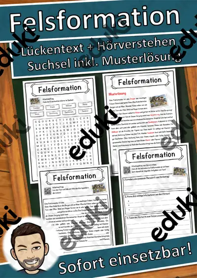
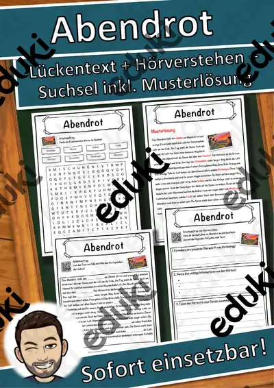

Lesespur: Land Art: Kunst aus Naturmaterialien – Lesespurgeschichte mit Rätseln (Klasse 3)
Land Art – Kunst aus Naturmaterialien – Lesespurgeschichte Kunst (Klasse 3/4)Begib dich mit deiner Klasse auf eine spannende Lesespur zur Land Art! Jule und Emir erkunden mit ihrer Kunstlehrerin einen Land-Art-Pfad im bunten Herbstwald: Auf der Blätterwiese legen sie einen Farbverlauf, am Bachufer bauen sie einen Steinturm im Gleichgewicht, auf der Lichtung entstehen Kreis und Spirale, am Baumstumpf ein Waldgesicht aus Eicheln. Am Fotopunkt erfahren sie, warum Land-Art-Werke fotografiert werden, am Waldsofa entdecken sie ein riesiges Gemeinschaftskunstwerk, und vom Aussichtshügel sehen sie alles aus einem neuen Blickwinkel. Ihr Tannenzapfen Zappo ist immer dabei. Am Ende jedes Abschnitts verrät ein Hinweis den nächsten Ort auf dem Waldplan – nur wer richtig liest, findet den Weg und sammelt alle geheimen Buchstaben zum Lösungswort.
Die perfekte Lesespur für den KUNSTUNTERRICHT der 3. und 4. Klasse – ideal im Herbst und als Einstieg in ein eigenes Land-Art-Projekt: Sie verbindet motivierendes, sinnentnehmendes Lesen mit Gestaltungswissen und Naturerleben – und schult zugleich das genaue Arbeiten. Das Material ist SOFORT EINSETZBAR und in DREI DIFFERENZIERUNGSSTUFEN (leicht ★ / mittel ★★ / schwer ★★★) angelegt.WICHTIG: Das komplette Material ist sowohl in FARBE als auch in SCHWARZ-WEISS enthalten – ideal zum Sparen von Druckkosten.DAS IST ENTHALTEN
- Lesespurgeschichte in 3 Niveaus (leicht, mittel, schwer)
- farbiger Waldplan als Suchkarte
- Hörverstehen mit QR-Code zur MP3 (selbstständiges Hören mit Kopfhörern)
- vier Aufträge auf dem Weg: ein Zuordnungs-Rätsel, ein Quiz, eine Rechenaufgabe und ein Steckbrief
- Rätselseite (Wörter-Suchsel + Fragen)
- Ausmalbild zum Thema
- ausführliches Lösungsblatt für die Lehrkraft
- alles zusätzlich als komplette Schwarz-Weiß-VarianteSO FUNKTIONIERT DIE LESESPURDie Kinder lesen ab START, finden im Text den nächsten Ort, suchen ihn auf dem Waldplan und lesen bei dieser Station weiter. An jeder richtigen Station gibt es einen Buchstaben. Eingebaute Sackgassen (Wanderparkplatz, Hochsitz, Holzstapel, Futterkrippe) gehören zwar zum Wald, sind aber keine Stationen und dienen der Selbstkontrolle. Am Ende werden die gesammelten Buchstaben umgestellt und ergeben ein geheimes Lösungswort. (Die Lösungen sind selbstverständlich nur im Lösungsblatt für die Lehrkraft enthalten.)INHALTLICHER SCHWERPUNKTWas ist Land Art? Die Kinder lernen Land Art als Kunst kennen, die draußen aus Fundstücken wie Blättern, Steinen, Zapfen und Stöcken entsteht. Sie entdecken Gestaltungsmittel wie Farbverlauf, Reihung, Kreis, Spirale und Gleichgewicht, erfahren, dass Land-Art-Werke vergänglich sind und deshalb fotografiert werden, und lernen Regeln für den achtsamen Umgang mit der Natur: nichts abreißen, Tiere nicht stören, nur nehmen, was am Boden liegt.ABGEDECKTER LEHRPLAN (Klasse 3/4, Kunst)
- Kunst (LehrplanPLUS Bayern) – Grundschule 3/4 „Räumlich gestalten / Kunst mit Naturmaterialien“: Land Art als Kunstform kennen, mit Fundstücken gestalten, Gestaltungsmittel (Farbverlauf, Reihung, Kreis, Spirale, Gleichgewicht) anwenden, vergängliche Werke fotografisch dokumentieren und die Wirkung des Blickwinkels erfahren.
- Deutsch – Lesen mit Texten und Medien umgehen: sinnentnehmend lesen, einem Text gezielt Informationen entnehmen; Zuhören: einem Sachhörtext konzentriert folgen (Hörverstehen mit MP3).
- Mathematik – Rechnen im Zahlenraum bis 100.
- Fächerübergreifend / Kompetenzen: HSU (Lebensraum Wald, Naturschutz), Umweltbildung, genaues Lesen und Prüfen, kreatives Gestalten (Ausmalbild).
Geeignet für Freiarbeit, Stationenlernen, Vertretungsstunden, Wochenplan, Projekttage, Wandertage und Homeschooling. Klassenstufe 3/4.
Ähnliche Materialien

Lesespur: Der Herbstwald – Lesespurgeschichte mit Rätseln (Klasse 3)

Spiral-Gespenster zum Aufhängen – Halloween-Bastelvorlage mit Lesetext, 3-fach differenziert (Klasse 2/3)

Lesespur: Mobiles: Kunst im Gleichgewicht – Lesespurgeschichte mit Rätseln (Klasse 6)

Lesespur: Wenn die Blätter bunt werden – Lesespurgeschichte mit Rätseln (Klasse 3)

Leseroute Herbstwald: Stationen zum Lesen und Verstehen

Felsformation Lückentext mit Wortspeicher Hörverstehen und Suchsel

Abendrot Lückentext mit Wortspeicher Hörverstehen und Suchsel